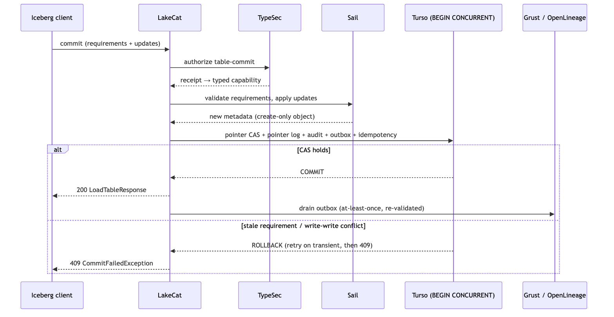

The workspace expresses the boundary directly. Five
traits—CatalogStore, SailCatalogEngine,
GovernanceEngine, CatalogGraphSink,
LineageSink—are the only places domain behavior enters, and
their defaults are conservative: an in-memory store, an allow-all engine
that labels itself lakecat-allow-all-local, a deferred Sail
engine whose plan_scan returns NotSupported
rather than an empty plan, a no-op graph sink, and a credential issuer
that vends only public configuration. Real integrations are activated by
explicit features (turso-local, sail-local,
typesec-local, grust-turso-local). The default
build, in particular, honors obligation 4 of the engine contract:
without Sail it rejects Iceberg updates it cannot apply instead
of returning success and leaving the table unchanged—a behavior the
first adversarial review found and reported as silent acceptance
(§8.1).
An Iceberg REST commit is an optimistic transition: the client
presents requirements describing the state it planned against and
updates producing the next metadata document. LakeCat validates
requirements before updates; asks Sail to apply the updates and write a
create-only metadata object; and then performs one store
transaction that (i) conditionally advances the metadata pointer,
guarded on the prior
location—updated_rows == 0 ⇒ Conflict—(ii) appends a
pointer-log row, (iii) appends a value-redacted audit event, (iv) stages
an outbox event, and (v) records an idempotency entry binding the key to
the request’s content hash. If any write fails, all roll back; the
standard REST response is returned only afterward. A stale requirement
yields HTTP 409 CommitFailedException, and no part of the
attempted transition becomes current. Cleanup of an uncommitted metadata
object is attempted only on error and never overrides the original CAS
or store error.
This is Richardson’s transactional outbox [58] applied to catalog
side effects: graph and lineage projections are durable catalog facts
drained after commit, in created_at, event_id
order, so lineage reflects committed state rather than a handler’s
best-effort side effect. The contract is explicitly at-least-once; sinks
must tolerate deterministic duplicate delivery, and the drain
re-validates each event against a closed schema—requiring, for instance,
that a governed scan replay carry the same read restriction at the top
level and inside the receipt context, a non-blank purpose, and a
positive TTL cap—so downstream evidence can never inherit a claim the
receipt did not capture.

Figure 4. The catalog transaction binds the pointer transition to its audit, outbox, and idempotency evidence; external projections are replayed from committed state.
BEGIN CONCURRENTThe durable spine is the Rust turso database [59]. Its
first LakeCat integration serialized all writers behind a per-store
mutex—correct, but coupling unrelated warehouses and the outbox relay to
one lock. Replacing it required an empirical finding: under
PRAGMA journal_mode=mvcc, the binding’s typed
conn.transaction() still issues BEGIN DEFERRED
and remains single-writer, so a second writer to a different
row fails with “database is locked.” Concurrency requires issuing
BEGIN CONCURRENT explicitly. With that, distinct-row
commits run truly concurrently, and a same-row race yields exactly one
winner and a Write-write conflict for the loser at
COMMIT—Bernstein and Goodman’s multiversion scheme [60]
surfacing as snapshot-isolation write conflicts [61].
LakeCat’s write_txn helper therefore opens a
pragma-warmed pooled connection, issues BEGIN CONCURRENT,
runs the body, and commits; on Busy,
BusySnapshot, Write-write conflict, or
Commit dependency aborted it rolls back and retries with
exponential backoff, capped at eight attempts, at the begin, body, and
commit boundaries. Correctness under a same-table race follows from
composition: the loser’s retry re-reads the winner’s snapshot, the
conditional pointer update mismatches, and the outcome is the terminal
Iceberg 409—bounded retry converges to one winner plus conflicts, with
no livelock. Exhausted transient contention now returns an Iceberg REST
503 rather than a misleading 500. Regression tests hold eight writers
through 100 synchronized same-table CAS rounds and 1,600 concurrent
read-before-commit cycles, requiring that every write be either the sole
accepted winner or an explicit pointer conflict, and that an active
table never disappear or surface an internal error.
Iceberg REST namespaces are ordered component arrays, encoded on the
wire with U+001F separators. A catalog that joins components with
. for its internal keys silently aliases
["a.b"] with ["a", "b"]. LakeCat’s first
adversarial review recorded the seed of this defect (a
.-permissive name validator); the community program refused
to patch one key family and instead introduced a versioned,
length-prefixed storage key—v1:3:a.b versus
v1:1:a:1:b—applied to namespace, table, view, receipt,
soft-delete, and policy scope, with a startup migration that validates
every legacy row, rewrites all dependent keys in one transaction,
records a schema marker only on success, and rolls back on any corrupt
row. The human-readable dotted path survives as display data and “must
not be reintroduced as a durable key” [62].
The read path is where the engine contract’s second obligation is
discharged. After authorization, LakeCat loads the capability’s
table, builds a ReadRestriction (allowed columns, row
predicate, purpose, policy hash), and calls Sail’s
plan_authorized_table_scan with the capability itself, so
the planner reuses “the exact receipt and restriction that LakeCat will
record as scan evidence” and does not re-authorize reconstructed
context. Inside, the restriction becomes
effective_projection(requested) and
mandatory_filters() before any file task exists. The
governing rule is narrow, never widen: an empty client
projection under a column restriction means the allowed columns; a
client projection may narrow further but cannot widen. LakeCat records
both the requested and the effective projection as replay evidence, and
recomputes the restriction on every stateless
fetchScanTasks so a stale token cannot expand back to all
columns. When Sail drives the catalog directly as a
CatalogProvider, the same gate runs inside each provider
method and mints the same typed capabilities—“the ‘policy and plan fuse
in one process’ property the design called the architectural prize”
[54].